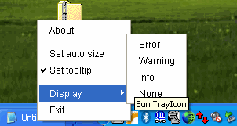

La bandeja del sistema es un área especializada del escritorio donde los usuarios pueden acceder a los programas que se están ejecutando actualmente. Esta área puede ser referida de manera diferente en varios sistemas operativos. En Windows de Microsoft, la bandeja del sistema es referida como el Área de Estado de la Barra de Tareas, mientras que en el Escritorio del Entorno de modelo de objetos de red GNU (GNOME, en inglés) es referida como el Área de Notificación. En en Entorno de Escritorio K (KDE, en inglés) esta área es referida como la Bandeja del Sistema. Sin embargo, en cada sistema el área de la bandeja es compartida por todas las aplicaciones que se ejecutan en el escritorio.
La clase
java.awt.SystemTray presentada en la versión 6 de Java™ SE representa la bandeja del
sistema para un escritorio. La bandeja del sistema puede ser accedida llamando al método estático
SystemTray.getSystemTray(). Antes de llamar a este método, use el método estático
isSupported() para comprobar que la bandeja del sistema sea compatible. Si la bandeja del
sistema no es compatible en esta plataforma, el método isSupported() devuelve false. Si la
aplicación intenta llamar al método getSystemTray() en ese caso, el método lanzará una
java.lang.UnsupportedOperationException.
Una aplicación no puede crear una instancia de la clase SystemTray. Sólo una única instancia creada
dentro de esta clase puede existir, y esta instancia puede ser obtenida usando el método
getSystemTray().
La bandeja del sistema contiene uno o más iconos de bandeja que son añadidos a la bandeja usando el método
add(java.awt.TrayIcon). Pueden ser eliminados cuando no se necesitan más con el método
remove(java.awt.TrayIcon).
add() puede lanzar una AWTException si el
sistema operativo o el entorno de ejecución Java determina que el icono no puede ser añadido a la bandeja del
sistema. Por ejemplo, una AWTException se lanzará por los escritorios en X-Window si la bandeja
del sistema no existe en el escritorio.
La funcionalidad de la clase
TrayIcon
va más alla de que el icono se visualize en la bandeja. También incluye una tooltip de texto, un menú
emergente, mensajes de gloo, y un conjunto de oyentes asociados con ello. Un objeto TrayIcon
genera varios eventos de ratón y adminte la adición de los oyentes correspondientes para recibir la
notificación de esos eventos. La clase TrayIcon procesa algunos de los eventos por sí misma. Por
ejemplo, por defecto, cuando se realiza una pulsación con el botón derecho del ratón sobre un icono de la
bandeja, mostrará el menú emergente especificado. Cuando se realiza una doble pulsación con el ratón, el
objeto TrayIcon genera un ActionEvent para lanzar una aplicación. Cuando el puntero
del ratón se desplaza sobre el icono de la bandeja, se mostrará la tooltip. La imagen del icono es
automáticamente redimensionada para que se ajuste al espacio asignado para la imagen en la bandeja.
La siguiente demostración, desarrollada usando el paquete AWT, demuestra las características de las clases SystemTray y TrayIcon.

Desafortunadamente, la actual implementación de la clase TrayIcon suministra soporte limitado
del menú emergente de Swing (la clase JPopupMenu) y no habilita a una aplicación a usar todas las
capacidades del paquete javax.swing. La propuesta de solución para este problema es descrita en la
Base de Datos de Errores, vea el ID del Error
6285881.
bulb.gif
en el directorio image. Compile y ejecute el ejemplo, consulte el
indice de ejemplos.
El trozo de código siguiente muestra cómo agregar un icono de sistema a la bandeja del sistema y aplicar un menú emergente:
...
//Comprueba que SystemTray es compatible
if (!SystemTray.isSupported()) {
System.out.println("SystemTray no es compatible");
return;
}
final PopupMenu popup = new PopupMenu();
final TrayIcon trayIcon =
new TrayIcon(createImage("images/bulb.gif", "icono de bandeja"));
final SystemTray tray = SystemTray.getSystemTray();
// Crea un menú emergente de componentes
MenuItem aboutItem = new MenuItem("Acerca");
CheckboxMenuItem cb1 = new CheckboxMenuItem("Establecer tamaño automático");
CheckboxMenuItem cb2 = new CheckboxMenuItem("Establecer tooltip");
Menu displayMenu = new Menu("Mostrar");
MenuItem errorItem = new MenuItem("Error");
MenuItem warningItem = new MenuItem("Advertencia");
MenuItem infoItem = new MenuItem("Información");
MenuItem noneItem = new MenuItem("Ninguna");
MenuItem exitItem = new MenuItem("Salir");
//Agraga los componentes al menú emergente
popup.add(aboutItem);
popup.addSeparator();
popup.add(cb1);
popup.add(cb2);
popup.addSeparator();
popup.add(displayMenu);
displayMenu.add(errorItem);
displayMenu.add(warningItem);
displayMenu.add(infoItem);
displayMenu.add(noneItem);
popup.add(exitItem);
trayIcon.setPopupMenu(popup);
try {
tray.add(trayIcon);
} catch (AWTException e) {
System.out.println("No se puedo añadir TrayIcon.");
}
...
El código completo para esta demostración está disponible en el fichero
TrayIconDemo.java
. Esta demostración también usa el fichero de imagen
bulb.gif
.
Eliminar las limitaciones actuales al aplicar componentes de Swing habilitará a los desarrolladores a agregar
componentes tales como JMenuItem (con imágen), JRadioButtonMenuItem, y
JCheckBoxMenuItem.
Sólo una instancia única creada dentro de la clase SystemTray puede existir.
| Método | Propósito |
|---|---|
| add | Agrega un icono de bandeja a la bandeja del sistema. El icono de bandeja se vuelve visible en la bandeja del sistema una vez es añadido. El orden en el cual los iconos osn visualizados en la bandeja no está especificado — es dependiente de la plataforma y la implmentación. |
| getSystemTray |
Obtiene una instancia de SystemTray que representa el área de la bandeja del escritorio.
Este método siempre devuelve la misma instancia por aplicación. En algunas plataformas la bandeja del
sistema puede no ser compatible. Use el método isSupported() para comprobar si la bandeja
del sistema es compatible.
|
| isSupported |
Devuelve información sobre si la bandeja del sistema es compatible con la plataforma actual. Además de
mostrar el icono de la bandeja, la compatibilidad mínima con la bandeja del sistema incluye un menú
emergente (vea el método TrayIcon.setPopupMenu(PopupMenu)) o un evento de acción (vea
TrayIcon.addActionListener(ActionListener)).
|
Un objeto TrayIcon representa un icono de bandeja que puede ser añadido a la bandeja del sistema.
Un objeto TrayIcon puede tener una tooltip (texto), una imagen, un menú emergente, y un conjunto
de oyentes asociados con él.
| Método | Propósito |
|---|---|
| setImageAutoSize |
Establece la propiedad auto-size. Auto-size determina si la imagen de la bandeja se redimensiona
automáticamente para encajar en el espacio asignado para la imagen en la bandeja. Por defecto, la
propiedad auto-size se establece a false.
|
| setPopupMenu |
Establece el menú emergente para este objeto TrayIcon. Si pop-up es null,
ningún menú emergente será asociado con este objeto TrayIcon.
|
| setToolTip |
Establece la cadena tooltip para este objeto TrayIcon. La tooltip es visualizada
automáticamente cuando el ratón se desplaza sobre el icono. Establecer la tooltip anull
elimina cualquier texto de tooltip. Cuando se muestra, la cadena tooltip puede ser truncada en algunas
plataformas; el número de caracteres que pueden ser visualizados depende de la plataforma.
|
| Ejemplo | Dónde Se Describe | Notas |
|---|---|---|
TrayIconDemo
|
Esta sección | Crea el icono de bandeja en la bandeja del sistema, agrega un menú emergente al icono de bandeja. |